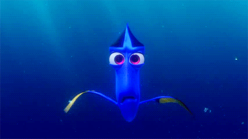
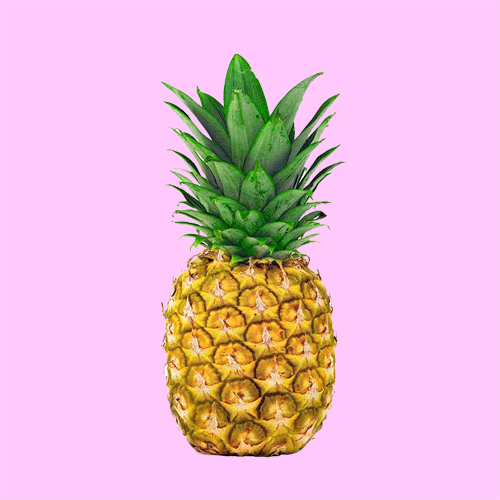
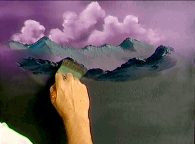

By Rachel Wolff Posted 12/12/13 8:00 AM
Contemporary artists are updating the modernist tradition with new tactics and new media
The circular, classical-looking structure, titled Farfromwords (2013), had an opening that funneled visitors toward a viewing area that screened the video work Swallow (2013), an extended handling of Prouvost’s filmed vignettes wherein staccato cuts train the eye toward berries , bathing beauties , chirping birds, hungry fish , and a woman swimming through a natural pool while holding a pineapple  to the crown of her head. Prouvost’s dreamlike montage is set to a soundtrack of heavy breathing and a whispery voice (the artist’s own), uttering occasional statements or directives, such as “The birds are eating the raspberries” and “Swallow this.”
Reflecting on the London-based French artist’s six-month residency in Italy, the multisensory collage transmits the wide variety of what she saw and experienced during her stay. Collage offered an ideal conduit for Prouvost, says Whitechapel curator Daniel Herrmann. It enabled the artist (who cites Merz founder and collage enthusiast Kurt Schwitters as a major influence) to create an immersive, high-impact artwork that nods at the ways in which we share and consume experiences today.
“The culture that we live in has become such a sort of cut-and-paste culture,” Herrmann points out. “Collage  has become a representative for that state of cultural production. At the same time, I think it transcends it. It offers an alternative to an ever-shifting, ever-fluid image world and reminds people of tactility, texture, and the reality of the world we live in—a unique approach that visual art can offer that digital media does not convey.”
has become a representative for that state of cultural production. At the same time, I think it transcends it. It offers an alternative to an ever-shifting, ever-fluid image world and reminds people of tactility, texture, and the reality of the world we live in—a unique approach that visual art can offer that digital media does not convey.”
Collage and assemblage can also be characterized as ways “to experience information simultaneously,” says Laura Hoptman, a curator in the department of painting  and sculpture at the Museum of Modern Art—which may be truer to our real-time experiences of people, places, and information than ever before.
This kind of “horizontal cloud of information,” as Hoptman calls it, is perceptible in work by such artists as Isa Genzken, whose first retrospective is on view at MoMA through March 10. Genzken’s assemblage-centric oeuvre includes a broken slot machine plastered with snapshots taken of and by friends; abstract sculptures made from pushcarts, fabric, furniture  , and plastic plants ; and mirrors coated with brightly colored tape and reproductions of Old Master paintings. It’s information overload rendered in tactile, three-dimensional form. And it’s a wider-reaching approach that Hoptman sees as characteristic of collage in the 21st century. Collage bridges media, flattens time, and reaches out beyond what immediately surrounds us.
, and plastic plants ; and mirrors coated with brightly colored tape and reproductions of Old Master paintings. It’s information overload rendered in tactile, three-dimensional form. And it’s a wider-reaching approach that Hoptman sees as characteristic of collage in the 21st century. Collage bridges media, flattens time, and reaches out beyond what immediately surrounds us.
Indeed, many contemporary artists are using the technique to confront image culture in the modern world, with its barrage of rapidly spreading, often pixelated simulacra that seep into our consciousness hundreds (if not thousands) of times a day. Video artist Ryan Trecartin is one practitioner often cited as a pioneer of this type of thinking and esthetic. His frenetic, acid-hued videos, digital collages, and installations are described as visual manifestations of the Internet itself—riffing on the out-there, free-associative hodgepodge that is our browser history at the end of each day.
Cameron Gray is another devoté. In June, Gray showed a series of collage and assemblage works at Mike Weiss Gallery in New York, in which LCD flat screens looping sampled GIFs were inserted into static images that were also sourced from the Web . C-prints like I Want to Be the One to Walk in the Sun (2013) were mounted on gallery walls with pushpins over embedded flat screens emitting kaleidoscopic digital collages revealed through strategic cutouts (in this case, a buxom model’s bikini top and bottom). Larger, denser, more assemblage-based works wildly mixed lights, paper cutouts, streaks of Day-Glo paint, and GIF-laden screens.